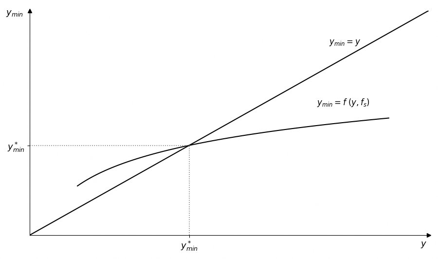

Pobreza
Estructura de la presentación
Premisa subjetiva de la pobreza y objetivos del estudio.
CBA, Adulto Equivalente, LP e indigencia.
Autopercepción, componente relativo y escuela de Leyden.
Regresión MCO, parámetros y umbral de pobreza subjetiva.
Prueba piloto interactiva y espacio 3D de resultados.
¿Qué es la pobreza?
Una percepción subjetiva cuya definición varía según las expectativas y el contexto socioeconómico de cada individuo.
Premisa del estudio
La pobreza no es un hecho unívoco: conviven al menos dos grandes enfoques.
Criterios externos: ingresos vs. canastas de consumo normativas, determinadas por organismos como la FAO/OMS y ajustadas por el IPC.
Método del Ingreso LP / LIAutopercepción del bienestar material. "Las personas son los mejores jueces de su propia situación." Incluye un componente relativo.
MIQ / IEQ LPS · LPLEste trabajo prioriza la pobreza subjetiva a través de la Línea de Pobreza Subjetiva (LPS), sin dejar de examinar las limitaciones del método objetivo en contextos de alta inflación y subdeclaración.
Línea de Pobreza
Determinación de hogares en situación de privación basándose en si sus ingresos alcanzan los umbrales de la CBA.
Canasta Básica Alimentaria
La CBA se diseña considerando necesidades calóricas y proteicas por sexo, edad y nivel de actividad según parámetros de la FAO/OMS.
Hombre de 30–60 años con actividad física moderada. Sirve como unidad base para ponderar las necesidades de cada hogar.
Si los ingresos totales \(<\) LI del hogar → hogar indigente.
\(\mathrm{LP} = \mathrm{LI} \,/\, \text{coef. de Engel}\)
Si ingresos totales \(<\) LP → hogar pobre.
El ajuste por inflación se realiza mediante el IPC.
Limitaciones del método objetivo
El IPC puede no capturar fielmente el alza de precios en contextos de alta volatilidad como Argentina.
Los ingresos reportados en encuestas suelen estar subestimados, especialmente en hogares de altos recursos.
Ignora patrimonio, ahorro, acceso a bienes públicos (salud, educación) y nivel de endeudamiento.
Aunque se denomina "objetivo", requiere múltiples decisiones subjetivas: qué bienes incluir en la canasta, cómo definir el adulto equivalente, etc.
Pobreza Subjetiva
La valoración de la pobreza depende también de la comparación con el nivel de vida de otros — componente relativo.
Origen: escuela de Leyden
Las herramientas clave: MIQ (Minimum Income Question) e IEQ (Income Evaluation Question).
Métodos de medición subjetiva
Se pregunta el ingreso mínimo (MIQ). Con las respuestas se estima una regresión; la intersección con la bisectriz define la línea. Foco de este trabajo.
Escala IEQ del 1 al 5 (muy mala → muy buena). Se determina una función de bienestar del ingreso para cada nivel declarado.
Pregunta directa: ¿se considera usted pobre? Captura autopercepción sin cálculos adicionales.
Se releva qué ingreso mínimo o qué características estructurales debe poseer un hogar para no ser considerado pobre.
Casos aplicados en Latinoamérica
Reducida — pero valiosa — literatura regional desde los 70.
Aguado & Osorio (UAB): "Percepción subjetiva de los pobres: una alternativa a la medición de la pobreza."
Lucchetti (CEDLAS): caracterización del bienestar y cálculo de la LPS en Argentina.
Giarrizzo (FCE-UBA): indicadores de pobreza subjetiva para aproximarse al bienestar de la población.
Scalese (FCEA-URU): primera aproximación a la pobreza subjetiva para el caso uruguayo.
Construcción de la línea de pobreza subjetiva
Regresión MCO en logaritmos + supuesto de racionalidad en equilibrio.
La MIQ y el sesgo de ingresos
La pregunta central es:
La respuesta — \(y_{\min}\) — depende fuertemente del ingreso actual del hogar:
- Ingresos altos → declaran \(y_{\min}\) elevado (sesgo hacia arriba).
- Ingresos bajos → declaran \(y_{\min}\) bajo (expectativas adaptadas).
La estimación de \(y_{\min}\) es libre de sesgos únicamente cuando el ingreso actual del hogar coincide exactamente con el monto declarado como mínimo.
Regresión lineal multivariable — MCO
Siguiendo a Goedhart et al. (1977), se usa la forma log-lineal:
Nivel base de las aspiraciones monetarias del individuo.
Elasticidad del ingreso mínimo respecto al ingreso actual. Velocidad de adaptación al nivel de vida.
Elasticidad respecto al tamaño familiar. \(\alpha_2 \to 0\) implica economías de escala perfectas.
Umbral de pobreza subjetiva
Se obtiene igualando la ecuación de regresión con la bisectriz \(y_{\min} = y\), y despejando \(y_{\min}^*\):
Se obtienen múltiples líneas de pobreza, una por composición familiar.
El punto de corte es donde el hogar tiene una percepción realista del ingreso mínimo de subsistencia, sin sesgos extremos.

Gráfico 1 — Línea de pobreza subjetiva · Fuente: Kapteyn et al. (1988)
Pros y contras de ambos métodos
Método Objetivo
✔ Pros
- Comparabilidad temporal y regional
- Transparencia metodológica (FAO/OMS)
✘ Contras
- Decisiones subjetivas implícitas
- Ignora patrimonio y bienes públicos
Método Subjetivo
✔ Pros
- Ajuste automático por costo regional
- Centrado en los propios consumidores
✘ Contras
- Supuesto de racionalidad perfecta
- Correlación positiva ingreso–\(y_{\min}\)
Prueba piloto
Simulación de la LPS basada en el enfoque de la escuela de Leyden, aplicada a participantes reales.
Diseño de la encuesta MIQ
Tres preguntas clave para alimentar el modelo:
"¿Cuál es el ingreso familiar estimado que considera necesario para no endeudarse?"
"¿Cuáles son sus ingresos familiares estimados?"
"¿Cuántas personas viven con usted?"
Objetivo: comparar la LPS de nuestra encuesta con la LPS calculada con datos de la EPH y con la línea de pobreza objetiva del INDEC.
Espacio 3D — Distribución de respuestas
Cada punto representa un hogar encuestado. Ejes: ingreso real \((y)\), ingreso mínimo declarado \((y_{\min})\) y tamaño familiar \((f_s)\). La intersección marca la LPS estimada.
Bibliografía
- Van Praag, B. M. S. — Funciones de Bienestar Individual y Comportamiento del Consumidor. Leiden University, 1968.
- Van Praag, B. M. S.; Kapteyn, A. — Evidencia adicional sobre la función de bienestar individual del ingreso. European Economic Review, 1973.
- Goedhart, T.; Halberstadt, V.; Kapteyn, A.; Van Praag, B. M. S. — La línea de pobreza: concepto y medición. Journal of Human Resources, 1977.
- Kapteyn, A. — Una Teoría de la Formación de Preferencias. Leiden University, 1979.
- Aguado Q., L. F.; Osorio M., A. M. — Percepción subjetiva de los pobres: una alternativa a la medición de la pobreza. UAB Colombia, 2006.
- Lucchetti, L. — Caracterización de la Percepción del Bienestar y Cálculo de la LPS en Argentina. CEDLAS, 2006.
- Giarrizzo, V. — La pobreza subjetiva en Argentina: construcción de indicadores. FCE UBA, 2006.
- Scalese, C. F. — Pobreza Subjetiva: una primera aproximación para el caso uruguayo. FCEA URU, 2021.
Gracias
Masia Insaurralde · Fernández Lancelle · Jouliá · Walter
Pobreza: Enfoques y Métodos para su Medición y Análisis